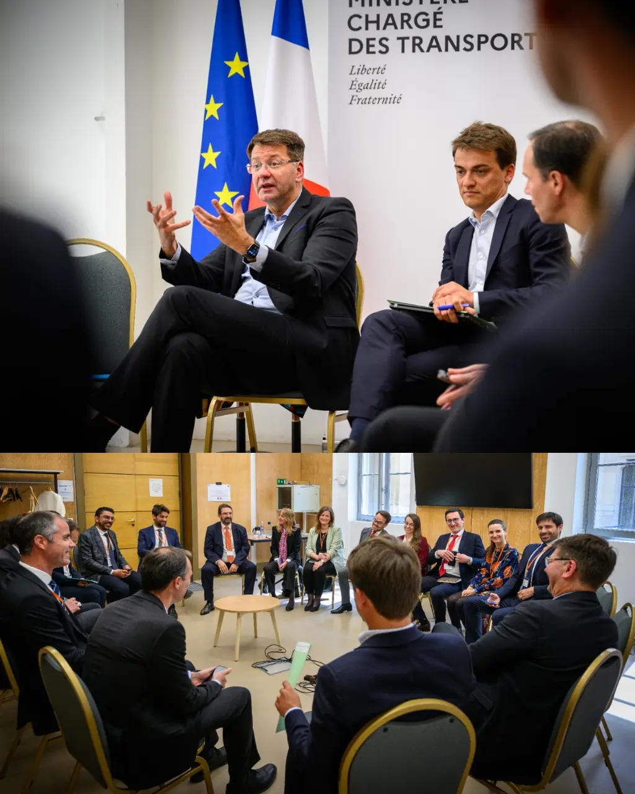
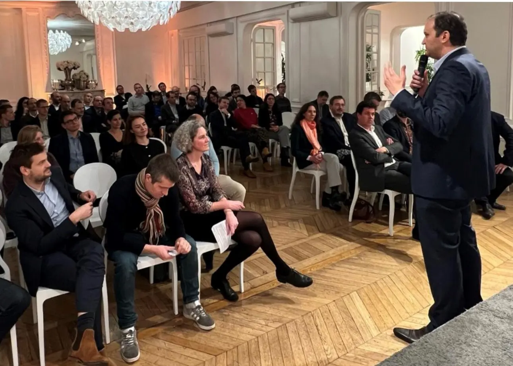
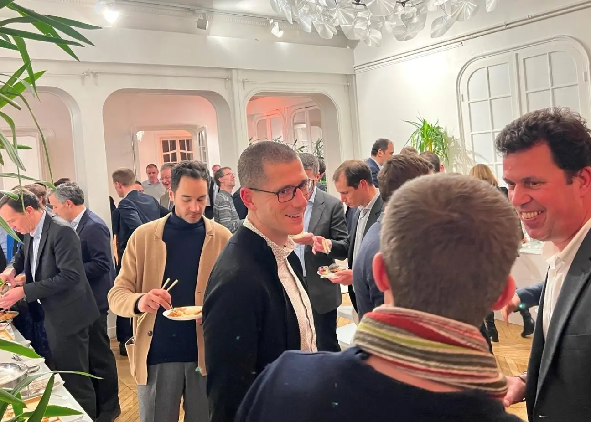

Présentation du cycle
Fer de France et ses membres organisent un cycle annuel de jeunes dirigeants du ferroviaire, baptisé Moisson-Desroches. Ce nom rend hommage à un ingénieur qui, dès l'aube du XIXe siècle et avant les autres, eut la vision de l'intérêt du chemin de fer et promut son déploiement.
Aujourd'hui encore, le ferroviaire poursuit sa transformation pour répondre au contexte mondialisé, technologique et aux enjeux du XXIe siècle. Fer de France considère qu'une des clés de ces transformations est de donner à de futurs dirigeants l'occasion d'un travail transverse et décloisonné :
- par la vision large qu'offre le cycle du ferroviaire et de son écosystème
- et par les liens au sein de la promotion, tissés entre pairs d'origines différentes, et porteurs chacun de leurs métiers et compétences propres, qui tous et ensemble font le système ferroviaire.
Le cycle Moisson-Desroches, au travers de rencontres, d'échanges, de travaux collectifs et de voyages d'étude, construit ainsi un « esprit de filière ».
Vous rejoignez une promotion d'une vingtaine de jeunes dirigeants pour suivre un cursus de rencontres, de visites et de travaux collaboratifs sur une année.
Les rencontres avec les dirigeants de la filière
Ces rencontres offrent aux participants une vision complète et stratégique de la filière ferroviaire.
Il s'agit d'une douzaine de rencontres, tout au long du cycle, avec les principaux acteurs français du ferroviaire pour comprendre leurs enjeux stratégiques vus par leurs plus hauts dirigeants.
Chaque membre de Fer de France organise une rencontre avec la promotion selon un programme d'une demi-journée, parfois d'une journée. Ces rencontres sont constituées d'interventions de responsables et dirigeants, et parfois de visites de site. Un moment d'échange direct avec le Président est organisé à chaque rencontre.
Le voyage d'étude à l'étranger
Cette approche du système ferroviaire français est complétée par une semaine de découverte d'un système ferroviaire à l'étranger, permettant d'élargir les perspectives au-delà du contexte français.
Les destinations des précédentes promotions ont été : le Royaume-Uni, l'Allemagne, la Suisse, la Suède, le Japon, les pays du Golfe, l'Espagne, l'Autriche, la Corée du Sud, l'Italie, et en 2026, le Canada.
Les séminaires du cycle
Le cycle s'articule autour d'une série de séminaires, environ tous les deux mois.
Un séminaire d'intégration en début de cycle vise à poser les bases d'un collectif au sein de la promotion. La promotion se retrouve ensuite pour approfondir collectivement ou en équipes des thématiques du ferroviaire à travers des projets apprenants. Lors de ces séminaires, des animations spécifiques et des moments conviviaux permettent également de consolider des liens forts entre les participants.
Un séminaire de clôture termine le cycle. La promotion fait un bilan partagé de son cycle et rencontre la nouvelle promotion pour un passage de relais.

Le réseau des anciens
Le retour des participants au cycle Moisson-Desroches est excellent, avec, à titre d'illustration, un taux de recommandation de 100 % (sondage auprès de la promotion 2025). Sont soulignées la vision large et globale qu'offre le cycle du ferroviaire, et la construction d'un réseau et de liens interpersonnels avec des pairs.
Ce réseau se poursuit au-delà du cycle et les anciens participants forment une communauté active et transversale au secteur, fédérée autour de l'association « WeFer ».

